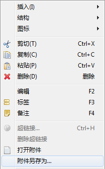

在XMIND中，您可以随意的为主题添加附件，用于对此主题的内容的补充、说明等等。添加的附件都会以此主题的子主题的形式展现在当前的思维图中，信息得以扁平化。您还可以方便地修改这些附件的显示名称，打开附件。方法如下：
第一种添加附件的方法：
- 选中主题；
-
按照下列两种方式之一打开附件添加对话框：
- 在菜单栏选择“插入 > 附件”。
- 点击工具栏上的附件图标。
- 选择文件，点击完成；
- 当前主题就会有一个以添加文件的名字命名的子主题，即附件。
第二种添加附件的方法：
- 在电脑中选中希望添加的文件；
- 使用鼠标拖动至XMIND中需要添加附件的主题上方；
- 释放鼠标后，此文件即可添加完成，成为此主题的子主题；
- 如果将文件拖至空白处释放鼠标，此文件会显示为一个自由主题。
注意：因为附件即主题，所以您可以轻松的修改它们的现实名称，调整位置，以及删除。
按照下列步骤打开，以及保存当前图中的附件：
- 选中附件主题；
- 单击右键从而打开鼠标右键菜单；
-
选择：
- “打开”来打开附件。
- “另存为…”来保存此附件至本地。

您可能对以下内容感兴趣……